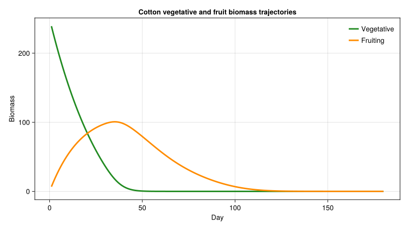
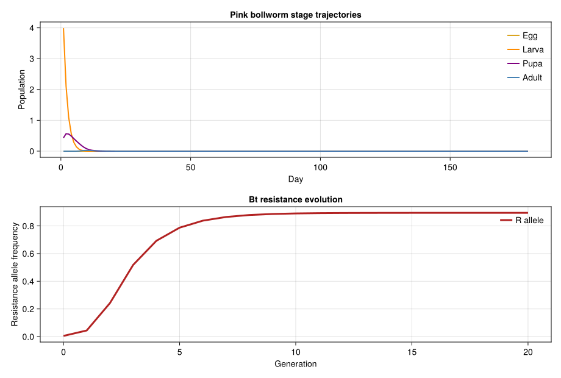

Indian Bt Cotton Bioeconomics
Simon Frost
- Introduction
- Setup
- 1. Cotton Growth Model
- 2. Pink Bollworm Pest Model
- 3. Bt Resistance Evolution
- 4. Economic Analysis
- 5. Regional Yield Regression
- 6. Scenario Analysis: 20-Year Projection
- 7. Discussion
Primary reference: (Gutierrez et al. 2020).
Introduction
India is the world’s largest cotton-growing nation, with over 12 million hectares planted annually — predominantly by smallholder farmers on rainfed plots of 1–2 ha. The introduction of Bt cotton (expressing Bacillus thuringiensis Cry1Ac toxin) beginning in 2002 dramatically reduced bollworm damage and initially increased yields and profits. By 2014, Bt cotton covered \>95% of India’s cotton area.
However, the Bt technology story in India is complex and contested. Gutierrez et al. (2015, 2020) developed physiologically based demographic models demonstrating that:
- Yield gains were largely weather-driven: Favorable monsoon rainfall and fertilizer adoption explained more yield variation than Bt technology alone (R² = 0.509 for the rainfall–yield regression)
- Resistance evolved rapidly: Pink bollworm (Pectinophora gossypiella) developed field-level resistance to Cry1Ac within 6–8 years, aided by India’s small 5% refuge mandate
- The economic burden was regressive: Expensive Bt seed ($53/ha vs $25/ha conventional) disproportionately burdened rainfed smallholders, especially in drought years when pest pressure is low and yields are limited by water
This vignette builds a coupled PBDM that links cotton plant growth, pink bollworm population dynamics, Bt resistance evolution, and farm-level economics. We use it to explore how refuge policy, rainfall variability, and resistance trajectory interact to shape the long-term value proposition of Bt cotton for Indian farmers.
References: - Gutierrez AP, Ponti L, Kranthi KR et al. (2015) Bio-economics of Indian Bt and non-Bt cotton field trial and simulation analysis. Environmental Sciences Europe 27:33 - Gutierrez AP, Ponti L, Kranthi S et al. (2020) Climate change and long-term pattern of cotton yield, lint and seed quality, and profitability in northwest India. Agricultural Systems 185:102939
Setup
using PhysiologicallyBasedDemographicModels
using CairoMakie1. Cotton Growth Model
Cotton (Gossypium hirsutum) development is driven by thermal accumulation above a base temperature of 12 °C, with an upper threshold of 35 °C beyond which development ceases. We model the cotton plant as a two-stage system using distributed delays: a vegetative phase (~600 degree-days from emergence to first square) and a fruiting phase (~800 degree-days from first square to open boll).
# Cotton development rate (Gutierrez et al. 2015)
cotton_dev = LinearDevelopmentRate(12.0, 35.0) # base 12 °C, upper 35 °C
# Vegetative stage: ~600 DD to first square, k=25 substages
veg_delay = DistributedDelay(25, 600.0; W0=10.0) # initial biomass
veg_stage = LifeStage(:vegetative, veg_delay, cotton_dev, 0.001)
# Fruiting stage: ~800 DD from square to open boll, k=30 substages
fruit_delay = DistributedDelay(30, 800.0; W0=0.0)
fruit_stage = LifeStage(:fruiting, fruit_delay, cotton_dev, 0.002)
cotton = Population(:cotton, [veg_stage, fruit_stage])
println("Cotton crop model:")
println(" Stages: $(n_stages(cotton))")
println(" Substages: $(n_substages(cotton))")
println(" Initial biomass: $(total_population(cotton)) units")
println(" Veg delay variance: $(round(delay_variance(veg_delay), digits=1)) DD²")
println(" Fruit delay variance: $(round(delay_variance(fruit_delay), digits=1)) DD²")Cotton crop model:
Stages: 2
Substages: 55
Initial biomass: 250.0 units
Veg delay variance: 14400.0 DD²
Fruit delay variance: 21333.3 DD²Temperature response
The linear development rate model clips development to zero below 12 °C and above 35 °C, accumulating degree-days in the permissive thermal range.
println("\n--- Cotton Development Rate vs Temperature ---")
println("Temp (°C) | Dev Rate (DD/day) | Daily DD")
println("-" ^ 45)
for T in [10.0, 15.0, 20.0, 25.0, 27.0, 30.0, 35.0, 40.0]
dr = development_rate(cotton_dev, T)
dd = degree_days(cotton_dev, T)
println(" $(lpad(string(T), 6)) | $(lpad(string(round(dr, digits=1)), 15)) | $(lpad(string(round(dd, digits=1)), 6))")
end--- Cotton Development Rate vs Temperature ---
Temp (°C) | Dev Rate (DD/day) | Daily DD
---------------------------------------------
10.0 | 0.0 | 0.0
15.0 | 3.0 | 3.0
20.0 | 8.0 | 8.0
25.0 | 13.0 | 13.0
27.0 | 15.0 | 15.0
30.0 | 18.0 | 18.0
35.0 | 23.0 | 23.0
40.0 | 23.0 | 28.0Simulating a growing season
We use sinusoidal weather representing central India (Maharashtra/Gujarat) conditions during the June–November kharif season: mean temperature ~27 °C with 5 °C seasonal amplitude.
# Maharashtra kharif season weather
weather = SinusoidalWeather(27.0, 5.0; phase=200.0, radiation=20.0)
# Check temperature at key points in the season
println("Season temperatures:")
for d in [1, 45, 90, 135, 180]
w = get_weather(weather, d)
println(" Day $(lpad(string(d), 3)): T_mean = $(round(w.T_mean, digits=1)) °C")
endSeason temperatures:
Day 1: T_mean = 28.4 °C
Day 45: T_mean = 24.7 °C
Day 90: T_mean = 22.3 °C
Day 135: T_mean = 22.5 °C
Day 180: T_mean = 25.3 °C# Simulate a 180-day growing season (June sowing through November harvest)
prob = PBDMProblem(cotton, weather, (1, 180))
sol = solve(prob, DirectIteration())
cdd = cumulative_degree_days(sol)
veg_traj = stage_trajectory(sol, 1)
fruit_traj = stage_trajectory(sol, 2)
println("\n--- 180-Day Growing Season Summary ---")
println("Total degree-days accumulated: $(round(cdd[end], digits=0))")
println("Phenology (50% maturation): day $(phenology(sol; threshold=0.5))")
println("Peak vegetative biomass: $(round(maximum(veg_traj), digits=1)) (day $(argmax(veg_traj)))")
println("Peak fruiting biomass: $(round(maximum(fruit_traj), digits=1)) (day $(argmax(fruit_traj)))")
println("Final fruit biomass: $(round(fruit_traj[end], digits=1))")
println("Net growth rate (λ): $(round(net_growth_rate(sol), digits=4))")
# Biomass trajectory at 30-day intervals
println("\n--- Crop Biomass Trajectory ---")
println("Day | DD (cum) | Vegetative | Fruiting | Total")
println("-" ^ 55)
for d in [1, 30, 60, 90, 120, 150, 180]
idx = min(d, length(veg_traj))
cidx = min(d, length(cdd))
tot = veg_traj[idx] + fruit_traj[idx]
println(" $(lpad(string(d), 3)) | $(lpad(string(round(cdd[cidx], digits=0)), 6)) | $(lpad(string(round(veg_traj[idx], digits=1)), 9)) | $(lpad(string(round(fruit_traj[idx], digits=1)), 7)) | $(lpad(string(round(tot, digits=1)), 7))")
end--- 180-Day Growing Season Summary ---
Total degree-days accumulated: 2148.0
Phenology (50% maturation): day 77
Peak vegetative biomass: 239.1 (day 1)
Peak fruiting biomass: 100.7 (day 35)
Final fruit biomass: 0.0
Net growth rate (λ): 0.894
--- Crop Biomass Trajectory ---
Day | DD (cum) | Vegetative | Fruiting | Total
-------------------------------------------------------
1 | 16.0 | 239.1 | 6.8 | 245.9
30 | 455.0 | 36.4 | 98.0 | 134.4
60 | 836.0 | 0.0 | 57.4 | 57.4
90 | 1162.0 | 0.0 | 14.0 | 14.0
120 | 1464.0 | 0.0 | 0.8 | 0.8
150 | 1781.0 | 0.0 | 0.0 | 0.0
180 | 2148.0 | 0.0 | 0.0 | 0.0Cotton biomass trajectories over the kharif season
fig = Figure(size=(820, 460))
ax = Axis(fig[1, 1],
xlabel="Day",
ylabel="Biomass",
title="Cotton vegetative and fruit biomass trajectories")
lines!(ax, sol.t, veg_traj; color=:forestgreen, linewidth=3, label="Vegetative")
lines!(ax, sol.t, fruit_traj; color=:darkorange, linewidth=3, label="Fruiting")
axislegend(ax, position=:rt, framevisible=false)
fig
2. Pink Bollworm Pest Model
The pink bollworm (Pectinophora gossypiella, PBW) is the primary target of Bt cotton in India. Larvae bore into developing bolls and feed internally, causing direct yield loss. Gutierrez et al. reported average infestation densities of 8.79 ± 0.27 larvae per boll on unprotected irrigated cotton.
We model a 4-stage lifecycle (egg → larva → pupa → adult) with distributed delays and temperature-dependent development.
# PBW development rate (base 13 °C)
pbw_dev = LinearDevelopmentRate(13.0, 35.0)
# 4-stage lifecycle with distributed delays
egg_delay = DistributedDelay(10, 80.0; W0=0.0) # ~80 DD egg period
larva_delay = DistributedDelay(15, 200.0; W0=0.5) # ~200 DD larval feeding
pupa_delay = DistributedDelay(12, 150.0; W0=0.0) # ~150 DD pupation
adult_delay = DistributedDelay(8, 100.0; W0=0.0) # ~100 DD adult lifespan
egg_stage = LifeStage(:egg, egg_delay, pbw_dev, 0.05)
larva_stage = LifeStage(:larva, larva_delay, pbw_dev, 0.03)
pupa_stage = LifeStage(:pupa, pupa_delay, pbw_dev, 0.02)
adult_stage = LifeStage(:adult, adult_delay, pbw_dev, 0.04)
pbw = Population(:pink_bollworm, [egg_stage, larva_stage, pupa_stage, adult_stage])
println("Pink Bollworm lifecycle model:")
println(" Stages: $(n_stages(pbw))")
println(" Substages: $(n_substages(pbw))")
println(" Egg DD: $(egg_delay.τ)")
println(" Larval DD: $(larva_delay.τ)")
println(" Pupal DD: $(pupa_delay.τ)")
println(" Adult DD: $(adult_delay.τ)")
println(" Total DD: $(egg_delay.τ + larva_delay.τ + pupa_delay.τ + adult_delay.τ)")Pink Bollworm lifecycle model:
Stages: 4
Substages: 45
Egg DD: 80.0
Larval DD: 200.0
Pupal DD: 150.0
Adult DD: 100.0
Total DD: 530.0Larval feeding and resource acquisition
Larval demand for boll tissue follows a Fraser-Gilbert supply-demand functional response. When boll supply is high relative to larval demand, acquisition saturates; under competition, per-capita acquisition drops non-linearly.
# Fraser-Gilbert supply-demand response for larval feeding
# a = 0.3 → moderate search efficiency
larval_feeding = FraserGilbertResponse(0.3)
println("\n--- Larval Feeding Functional Response ---")
println("Boll Supply | Larval Demand | Acquired | Supply/Demand Ratio")
println("-" ^ 65)
for (supply, demand) in [(1000.0, 10.0), (500.0, 50.0), (200.0, 100.0),
(100.0, 100.0), (50.0, 200.0), (10.0, 500.0)]
acq = acquire(larval_feeding, supply, demand)
sdr = supply_demand_ratio(larval_feeding, supply, demand)
println(" $(lpad(string(Int(supply)), 9)) | $(lpad(string(Int(demand)), 11)) | $(lpad(string(round(acq, digits=2)), 7)) | $(lpad(string(round(sdr, digits=3)), 10))")
end
println("\n→ High supply/demand: larvae acquire close to their full demand")
println("→ Low supply/demand: competition limits per-capita feeding")--- Larval Feeding Functional Response ---
Boll Supply | Larval Demand | Acquired | Supply/Demand Ratio
-----------------------------------------------------------------
1000 | 10 | 10.0 | 1.0
500 | 50 | 47.51 | 0.95
200 | 100 | 45.12 | 0.451
100 | 100 | 25.92 | 0.259
50 | 200 | 14.45 | 0.072
10 | 500 | 2.99 | 0.006
→ High supply/demand: larvae acquire close to their full demand
→ Low supply/demand: competition limits per-capita feedingPBW single-season dynamics
We drive the PBW lifecycle through the same kharif season weather to observe stage-structured population trajectories.
pbw_prob = PBDMProblem(pbw, weather, (1, 180))
pbw_sol = solve(pbw_prob, DirectIteration())
pbw_cdd = cumulative_degree_days(pbw_sol)
egg_traj = stage_trajectory(pbw_sol, 1)
larva_traj = stage_trajectory(pbw_sol, 2)
pupa_traj = stage_trajectory(pbw_sol, 3)
adult_traj = stage_trajectory(pbw_sol, 4)
pbw_total = total_population(pbw_sol)
println("\n--- PBW Season Dynamics ---")
println("Day | DD (cum) | Eggs | Larvae | Pupae | Adults | Total")
println("-" ^ 70)
for d in [1, 30, 60, 90, 120, 150, 180]
idx = min(d, length(egg_traj))
cidx = min(d, length(pbw_cdd))
println(" $(lpad(string(d), 3)) | $(lpad(string(round(pbw_cdd[cidx], digits=0)), 6)) | $(lpad(string(round(egg_traj[idx], digits=1)), 5)) | $(lpad(string(round(larva_traj[idx], digits=1)), 5)) | $(lpad(string(round(pupa_traj[idx], digits=1)), 5)) | $(lpad(string(round(adult_traj[idx], digits=1)), 5)) | $(lpad(string(round(pbw_total[idx], digits=1)), 6))")
end--- PBW Season Dynamics ---
Day | DD (cum) | Eggs | Larvae | Pupae | Adults | Total
----------------------------------------------------------------------
1 | 15.0 | 0.0 | 4.0 | 0.4 | 0.0 | 4.4
30 | 425.0 | 0.0 | 0.0 | 0.0 | 0.0 | 0.0
60 | 776.0 | 0.0 | 0.0 | 0.0 | 0.0 | 0.0
90 | 1072.0 | 0.0 | 0.0 | 0.0 | 0.0 | 0.0
120 | 1344.0 | 0.0 | 0.0 | 0.0 | 0.0 | 0.0
150 | 1631.0 | 0.0 | 0.0 | 0.0 | 0.0 | 0.0
180 | 1968.0 | 0.0 | 0.0 | 0.0 | 0.0 | 0.0Bollworm damage function
Larval feeding inside bolls causes yield loss. We use an exponential damage function calibrated so that the observed ~8.8 larvae/boll produces approximately 60% yield loss on unprotected irrigated cotton (Gutierrez et al. 2015).
# Calibration: 1 - exp(-a × 8.79) ≈ 0.60 → a ≈ 0.104
pbw_damage = ExponentialDamageFunction(0.104)
# Potential irrigated yield (kg lint/ha)
potential_yield_irr = 671.0
println("\n--- PBW Yield Damage Table ---")
println("Larvae/boll | Yield Loss (%) | Lost (kg/ha) | Actual Yield (kg/ha)")
println("-" ^ 65)
for larvae in [0.0, 0.5, 1.0, 2.0, 5.0, 8.79, 12.0, 20.0]
loss = yield_loss(pbw_damage, larvae, potential_yield_irr)
actual = actual_yield(pbw_damage, larvae, potential_yield_irr)
pct = round(100.0 * loss / potential_yield_irr, digits=1)
println(" $(lpad(string(larvae), 9)) | $(lpad(string(pct), 13)) | $(lpad(string(round(loss, digits=1)), 10)) | $(lpad(string(round(actual, digits=1)), 14))")
end--- PBW Yield Damage Table ---
Larvae/boll | Yield Loss (%) | Lost (kg/ha) | Actual Yield (kg/ha)
-----------------------------------------------------------------
0.0 | 0.0 | 0.0 | 671.0
0.5 | 5.1 | 34.0 | 637.0
1.0 | 9.9 | 66.3 | 604.7
2.0 | 18.8 | 126.0 | 545.0
5.0 | 40.5 | 272.1 | 398.9
8.79 | 59.9 | 402.0 | 269.0
12.0 | 71.3 | 478.4 | 192.6
20.0 | 87.5 | 587.2 | 83.83. Bt Resistance Evolution
Bt toxins (Cry1Ac in Bollgard I, Cry1Ac + Cry2Ab in Bollgard II) impose strong directional selection on bollworm populations. Resistance to Cry1Ac is controlled by a single autosomal locus with two alleles: susceptible (S) and resistant (R). Resistance is functionally recessive — only RR homozygotes survive high-dose Bt expression. Under random mating, genotype frequencies follow Hardy-Weinberg equilibrium.
# Initial resistance allele frequency (pre-Bt deployment, ~2002)
# Literature range: R₀ = 0.001–0.01
locus = DialleleicLocus(0.005, 0.0) # R = 0.5%, fully recessive
println("Initial resistance genetics:")
println(" R allele frequency: $(locus.R)")
println(" Dominance: $(locus.dominance) (fully recessive)")
freq = genotype_frequencies(locus)
println("\nHardy-Weinberg genotype frequencies:")
println(" SS (susceptible): $(round(freq.SS, digits=6)) — killed by Bt")
println(" SR (heterozygous): $(round(freq.SR, digits=6)) — partially killed")
println(" RR (resistant): $(round(freq.RR, digits=6)) — survives Bt")
println(" Sum check: $(round(freq.SS + freq.SR + freq.RR, digits=6))")Initial resistance genetics:
R allele frequency: 0.005
Dominance: 0.0 (fully recessive)
Hardy-Weinberg genotype frequencies:
SS (susceptible): 0.990025 — killed by Bt
SR (heterozygous): 0.00995 — partially killed
RR (resistant): 2.5e-5 — survives Bt
Sum check: 1.0Genotype-specific fitness on Bt cotton
Bt Cry1Ac protein kills ~95% of susceptible (SS) larvae. Heterozygotes (SR) experience ~50% mortality at high doses (partial dominance at the phenotype level despite genetic recessivity). Resistant (RR) larvae survive with ~90% probability.
# Fitness = probability of surviving to reproduce on Bt cotton
# SS: 5% survive, SR: 50% survive, RR: 90% survive
fitness_bt = GenotypeFitness(0.05, 0.50, 0.90)
# On conventional (non-Bt) cotton, all genotypes are equally fit
fitness_conv = GenotypeFitness(1.0, 1.0, 1.0)
println("Genotype fitness on Bt cotton:")
println(" w_SS = $(fitness_bt.w_SS) (95% killed)")
println(" w_SR = $(fitness_bt.w_SR) (50% killed)")
println(" w_RR = $(fitness_bt.w_RR) (10% killed)")Genotype fitness on Bt cotton:
w_SS = 0.05 (95% killed)
w_SR = 0.5 (50% killed)
w_RR = 0.9 (10% killed)Bt dose-response
The dose-response relationship for susceptible insects follows a log-logistic curve with steep slope, reflecting the high-dose strategy of Bt crops.
# Bt Cry1Ac dose-response: LD50 = 0.5 μg/g body weight, slope = 4.0
bt_dose = DoseResponse(0.5, 4.0)
println("\n--- Bt Cry1Ac Dose-Response (Susceptible Insects) ---")
println("Dose (μg/g) | Mortality (%)")
println("-" ^ 30)
for dose in [0.0, 0.1, 0.25, 0.5, 0.75, 1.0, 2.0, 5.0]
mort = mortality_probability(bt_dose, dose)
println(" $(lpad(string(dose), 8)) | $(lpad(string(round(100 * mort, digits=1)), 10))")
end
println("\nAt standard Bt expression (~1.0 μg/g): $(round(100 * mortality_probability(bt_dose, 1.0), digits=1))% kill")
println("At half expression (~0.5 μg/g): $(round(100 * mortality_probability(bt_dose, 0.5), digits=1))% kill")--- Bt Cry1Ac Dose-Response (Susceptible Insects) ---
Dose (μg/g) | Mortality (%)
------------------------------
0.0 | 0.0
0.1 | 0.2
0.25 | 5.9
0.5 | 50.0
0.75 | 83.5
1.0 | 94.1
2.0 | 99.6
5.0 | 100.0
At standard Bt expression (~1.0 μg/g): 94.1% kill
At half expression (~0.5 μg/g): 50.0% killResistance evolution over 20 generations
We track resistance allele frequency across 20 PBW generations (~10 years at ~2 generations per year in peninsular India). Each generation, selection on Bt fields increases R, while gene flow from refuge populations dilutes it.
# 5% structured refuge (Indian mandate 2006–2012)
refuge_frac = 0.05
R_refuge = 0.005 # near-zero selection pressure in refuge
locus_sim = DialleleicLocus(0.005, 0.0)
resistance_gens = Int[]
resistance_R = Float64[]
resistance_efficacy = Float64[]
println("\n--- Resistance Evolution (5% Refuge, 20 Generations) ---")
println("Gen | R allele | SS (%) | SR (%) | RR (%) | Bt Efficacy (%)")
println("-" ^ 70)
for gen in 0:20
freq = genotype_frequencies(locus_sim)
# Bt efficacy = weighted kill rate across genotypes
efficacy = freq.SS * 0.95 + freq.SR * 0.50 + freq.RR * 0.10
push!(resistance_gens, gen)
push!(resistance_R, locus_sim.R)
push!(resistance_efficacy, efficacy)
if gen % 2 == 0 || gen == 20
println(" $(lpad(string(gen), 2)) | $(lpad(string(round(locus_sim.R, digits=5)), 8)) | $(lpad(string(round(100 * freq.SS, digits=2)), 7)) | $(lpad(string(round(100 * freq.SR, digits=2)), 7)) | $(lpad(string(round(100 * freq.RR, digits=4)), 7)) | $(lpad(string(round(100 * efficacy, digits=1)), 10))")
end
if gen < 20
selection_step!(locus_sim, fitness_bt)
locus_sim.R = refuge_dilution(locus_sim.R, R_refuge, refuge_frac)
end
end--- Resistance Evolution (5% Refuge, 20 Generations) ---
Gen | R allele | SS (%) | SR (%) | RR (%) | Bt Efficacy (%)
----------------------------------------------------------------------
0 | 0.005 | 99.0 | 1.0 | 0.0025 | 94.6
2 | 0.24199 | 57.46 | 36.69 | 5.856 | 73.5
4 | 0.69256 | 9.45 | 42.58 | 47.964 | 35.1
6 | 0.83812 | 2.62 | 27.14 | 70.2441 | 23.1
8 | 0.87896 | 1.47 | 21.28 | 77.2568 | 19.8
10 | 0.89033 | 1.2 | 19.53 | 79.2694 | 18.8
12 | 0.8935 | 1.13 | 19.03 | 79.834 | 18.6
14 | 0.89438 | 1.12 | 18.89 | 79.9915 | 18.5
16 | 0.89462 | 1.11 | 18.85 | 80.0353 | 18.5
18 | 0.89469 | 1.11 | 18.84 | 80.0475 | 18.5
20 | 0.89471 | 1.11 | 18.84 | 80.0509 | 18.5Effect of refuge size on resistance durability
India initially mandated only 5% non-Bt refuge — far below the 20% recommended by resistance management scientists. We compare how refuge size affects the timeline to resistance.
println("\n--- Refuge Size vs Resistance Timeline ---")
println("Refuge (%) | Gens to R > 0.50 | Gens to Bt failure (<50% efficacy)")
println("-" ^ 65)
for refuge in [0.0, 0.05, 0.10, 0.20, 0.40]
locus_test = DialleleicLocus(0.005, 0.0)
yr_half = nothing
yr_fail = nothing
for gen in 1:200
selection_step!(locus_test, fitness_bt)
if refuge > 0
locus_test.R = refuge_dilution(locus_test.R, 0.005, refuge)
end
freq = genotype_frequencies(locus_test)
efficacy = freq.SS * 0.95 + freq.SR * 0.50 + freq.RR * 0.10
if yr_half === nothing && locus_test.R > 0.50
yr_half = gen
end
if yr_fail === nothing && efficacy < 0.50
yr_fail = gen
end
end
r_str = refuge == 0.0 ? "None" : "$(Int(refuge * 100))%"
h_str = yr_half === nothing ? ">200" : string(yr_half)
f_str = yr_fail === nothing ? ">200" : string(yr_fail)
println(" $(lpad(r_str, 8)) | $(lpad(h_str, 14)) | $(lpad(f_str, 20))")
end--- Refuge Size vs Resistance Timeline ---
Refuge (%) | Gens to R > 0.50 | Gens to Bt failure (<50% efficacy)
-----------------------------------------------------------------
None | 3 | 3
5% | 3 | 3
10% | 4 | 4
20% | 4 | 4
40% | >200 | >200Pink bollworm population and resistance trajectories
fig = Figure(size=(920, 620))
ax = Axis(fig[1, 1],
xlabel="Day",
ylabel="Population",
title="Pink bollworm stage trajectories")
for (traj, label, color) in zip(
[egg_traj, larva_traj, pupa_traj, adult_traj],
["Egg", "Larva", "Pupa", "Adult"],
[:goldenrod, :darkorange, :purple, :steelblue]
)
lines!(ax, pbw_sol.t, traj; color=color, linewidth=2, label=label)
end
axislegend(ax, position=:rt, framevisible=false)
ax = Axis(fig[2, 1],
xlabel="Generation",
ylabel="Resistance allele frequency",
title="Bt resistance evolution")
lines!(ax, resistance_gens, resistance_R; color=:firebrick, linewidth=3, label="R allele")
axislegend(ax, position=:rt, framevisible=false)
fig
Two-toxin pyramid: Bollgard II
India introduced dual-toxin Bt cotton (Cry1Ac + Cry2Ab, “Bollgard II”) to delay resistance. We model this as two independent resistance loci.
# Independent loci for dual-Bt resistance
locus_cry1ac = DialleleicLocus(0.005) # Cry1Ac resistance allele
locus_cry2ab = DialleleicLocus(0.001) # Cry2Ab resistance (rarer initially)
two_locus = TwoLocusResistance(locus_cry1ac, locus_cry2ab)
prob_full_resist = probability_fully_resistant(two_locus)
freq1 = genotype_frequencies(locus_cry1ac)
freq2 = genotype_frequencies(locus_cry2ab)
println("\n--- Dual-Bt (Bollgard II) Resistance ---")
println("Cry1Ac: R = $(locus_cry1ac.R), RR freq = $(round(freq1.RR, digits=8))")
println("Cry2Ab: R = $(locus_cry2ab.R), RR freq = $(round(freq2.RR, digits=8))")
println("P(fully resistant, RR at both loci): $(round(prob_full_resist, sigdigits=3))")
println("Ratio vs single-toxin Cry1Ac RR: $(round(prob_full_resist / freq1.RR, sigdigits=3))×")
println("→ Dual-Bt dramatically reduces initial resistance frequency,")
println(" but each locus still evolves independently once the other toxin fails")--- Dual-Bt (Bollgard II) Resistance ---
Cry1Ac: R = 0.005, RR freq = 2.5e-5
Cry2Ab: R = 0.001, RR freq = 1.0e-6
P(fully resistant, RR at both loci): 2.5e-11
Ratio vs single-toxin Cry1Ac RR: 1.0e-6×
→ Dual-Bt dramatically reduces initial resistance frequency,
but each locus still evolves independently once the other toxin failsVerifying allele frequencies from field monitoring
In field monitoring programs, resistance allele frequency is estimated from F2 screen assays that count genotypes among surviving adults.
# Example: field monitoring data (genotype counts from F2 screens)
println("\n--- Allele Frequency from Adult Counts ---")
println(" n_SS | n_SR | n_RR | Estimated R")
println("-" ^ 42)
for (nss, nsr, nrr) in [(100, 0, 0), (95, 5, 0), (80, 18, 2), (50, 40, 10), (10, 30, 60)]
R_est = allele_frequency_from_adults(Float64(nss), Float64(nsr), Float64(nrr))
println(" $(lpad(string(nss), 4)) | $(lpad(string(nsr), 4)) | $(lpad(string(nrr), 4)) | $(lpad(string(round(R_est, digits=4)), 8))")
end--- Allele Frequency from Adult Counts ---
n_SS | n_SR | n_RR | Estimated R
------------------------------------------
100 | 0 | 0 | 0.0
95 | 5 | 0 | 0.025
80 | 18 | 2 | 0.11
50 | 40 | 10 | 0.3
10 | 30 | 60 | 0.754. Economic Analysis
Indian cotton economics differ sharply between irrigated and rainfed production systems. We compare Bt vs conventional cotton profitability under both regimes using input cost data from Gutierrez et al. (2015).
Input costs
# Input costs per hectare (USD, from Gutierrez et al. 2015)
bt_costs = InputCostBundle(;
seed = 53.0, # Bt seed (Bollgard), premium priced
insecticide = 10.0, # reduced spraying on Bt cotton
fertilizer = 60.0, # DAP + urea
labor = 35.0 # planting, weeding, picking
)
conv_costs = InputCostBundle(;
seed = 25.0, # conventional seed
insecticide = 42.0, # 4–6 sprays per season
fertilizer = 60.0,
labor = 35.0
)
println("--- Input Costs per Hectare (USD) ---")
println("Bt cotton total: \$$(total_cost(bt_costs))")
println("Conventional cotton total: \$$(total_cost(conv_costs))")
println("Bt seed premium: \$$(53.0 - 25.0)")
println("Insecticide savings (Bt): \$$(42.0 - 10.0)")
println("Net Bt cost premium: \$$(total_cost(bt_costs) - total_cost(conv_costs))")--- Input Costs per Hectare (USD) ---
Bt cotton total: $158.0
Conventional cotton total: $162.0
Bt seed premium: $28.0
Insecticide savings (Bt): $32.0
Net Bt cost premium: $-4.0Revenue and profit: irrigated cotton
# Cotton lint price (Indian MSP ≈ \$1.90/kg)
cotton_price = CropRevenue(1.90, :lint_kg)
# Irrigated scenario: potential yield 671 kg lint/ha
# Bt cotton → ~1.0 residual larvae/boll; conventional → 8.79 larvae/boll
pot_yield = 671.0
bt_yield_irr = actual_yield(pbw_damage, 1.0, pot_yield)
conv_yield_irr = actual_yield(pbw_damage, 8.79, pot_yield)
bt_rev = revenue(cotton_price, bt_yield_irr)
conv_rev = revenue(cotton_price, conv_yield_irr)
bt_profit_irr = net_profit(cotton_price, bt_yield_irr, bt_costs)
conv_profit_irr = net_profit(cotton_price, conv_yield_irr, conv_costs)
println("\n--- Irrigated Cotton Economics (671 kg/ha potential) ---")
println(" | Bt Cotton | Conventional")
println("-" ^ 55)
println("Pest larvae/boll | $(lpad("1.0", 10)) | $(lpad("8.79", 10))")
println("Yield loss (kg/ha) | $(lpad(string(round(pot_yield - bt_yield_irr, digits=0)), 10)) | $(lpad(string(round(pot_yield - conv_yield_irr, digits=0)), 10))")
println("Actual yield (kg/ha)| $(lpad(string(round(bt_yield_irr, digits=0)), 10)) | $(lpad(string(round(conv_yield_irr, digits=0)), 10))")
println("Revenue (\$/ha) | \$$(lpad(string(round(bt_rev, digits=0)), 9)) | \$$(lpad(string(round(conv_rev, digits=0)), 9))")
println("Input costs (\$/ha) | \$$(lpad(string(round(total_cost(bt_costs), digits=0)), 9)) | \$$(lpad(string(round(total_cost(conv_costs), digits=0)), 9))")
println("Net profit (\$/ha) | \$$(lpad(string(round(bt_profit_irr, digits=0)), 9)) | \$$(lpad(string(round(conv_profit_irr, digits=0)), 9))")
println("Benefit-cost ratio | $(lpad(string(round(benefit_cost_ratio(bt_rev, total_cost(bt_costs)), digits=2)), 10)) | $(lpad(string(round(benefit_cost_ratio(conv_rev, total_cost(conv_costs)), digits=2)), 10))")
println("Daily income (\$/day)| \$$(lpad(string(round(daily_income(bt_profit_irr), digits=2)), 9)) | \$$(lpad(string(round(daily_income(conv_profit_irr), digits=2)), 9))")--- Irrigated Cotton Economics (671 kg/ha potential) ---
| Bt Cotton | Conventional
-------------------------------------------------------
Pest larvae/boll | 1.0 | 8.79
Yield loss (kg/ha) | 66.0 | 402.0
Actual yield (kg/ha)| 605.0 | 269.0
Revenue ($/ha) | $ 1149.0 | $ 511.0
Input costs ($/ha) | $ 158.0 | $ 162.0
Net profit ($/ha) | $ 991.0 | $ 349.0
Benefit-cost ratio | 7.27 | 3.15
Daily income ($/day)| $ 2.71 | $ 0.96Rainfed profitability across rainfall levels
Most Indian cotton (\>65%) is rainfed and yields depend critically on monsoon rainfall. Higher Bt seed costs represent a proportionally larger fraction of total investment when yields are low, making the technology riskier for smallholders in dry years.
rain_model = RainfallYieldModel(0.0, 0.573, -111.2)
println("\n--- Rainfed Profitability by Monsoon Rainfall ---")
println("Rain (mm) | Pot Yield | Bt Yield | Conv Yield | Bt Profit | Conv Profit | Bt Adv")
println("-" ^ 82)
for rain in [400, 500, 600, 750, 900, 1000, 1200]
pot = max(0.0, predict_yield(rain_model, Float64(rain)))
bt_y = actual_yield(pbw_damage, 1.0, pot)
cv_y = actual_yield(pbw_damage, 8.79, pot)
bt_p = net_profit(cotton_price, bt_y, bt_costs)
cv_p = net_profit(cotton_price, cv_y, conv_costs)
adv = bt_p - cv_p
println(" $(lpad(string(rain), 7)) | $(lpad(string(round(pot, digits=0)), 7)) | $(lpad(string(round(bt_y, digits=0)), 6)) | $(lpad(string(round(cv_y, digits=0)), 8)) | \$$(lpad(string(round(bt_p, digits=0)), 7)) | \$$(lpad(string(round(cv_p, digits=0)), 9)) | \$$(lpad(string(round(adv, digits=0)), 5))")
end
println("\n→ At low rainfall (<500mm), yields are low and the Bt seed premium")
println(" buys little absolute protection — the advantage shrinks or inverts")--- Rainfed Profitability by Monsoon Rainfall ---
Rain (mm) | Pot Yield | Bt Yield | Conv Yield | Bt Profit | Conv Profit | Bt Adv
----------------------------------------------------------------------------------
400 | 118.0 | 106.0 | 47.0 | $ 44.0 | $ -72.0 | $116.0
500 | 175.0 | 158.0 | 70.0 | $ 142.0 | $ -28.0 | $171.0
600 | 233.0 | 210.0 | 93.0 | $ 240.0 | $ 15.0 | $225.0
750 | 319.0 | 287.0 | 128.0 | $ 387.0 | $ 81.0 | $307.0
900 | 404.0 | 365.0 | 162.0 | $ 535.0 | $ 146.0 | $389.0
1000 | 462.0 | 416.0 | 185.0 | $ 633.0 | $ 190.0 | $443.0
1200 | 576.0 | 519.0 | 231.0 | $ 829.0 | $ 277.0 | $552.0
→ At low rainfall (<500mm), yields are low and the Bt seed premium
buys little absolute protection — the advantage shrinks or inverts5. Regional Yield Regression
Gutierrez et al. (2015) fitted two regression models explaining Indian cotton yields from weather variables, showing that climate explains more yield variation than Bt adoption.
Rainfall-only model
A simple linear regression of rainfed yield on monsoon rainfall captures half the yield variation:
y = −111.2 + 0.573 × rainfall (mm) (R² = 0.509)
rain_model = RainfallYieldModel(0.0, 0.573, -111.2)
println("--- Rainfed Yield Model: y = -111.2 + 0.573 × Rain ---")
println("Rainfall (mm) | Predicted Yield (kg/ha)")
println("-" ^ 42)
for rain in [400, 500, 600, 700, 800, 900, 1000, 1100, 1200]
y = predict_yield(rain_model, Float64(rain))
println(" $(lpad(string(rain), 10)) | $(lpad(string(round(y, digits=1)), 15))")
end
println("\nR² = 0.509 — rainfall alone explains ~51% of yield variation")
println("Each additional 100mm of monsoon rainfall → +57 kg/ha lint")--- Rainfed Yield Model: y = -111.2 + 0.573 × Rain ---
Rainfall (mm) | Predicted Yield (kg/ha)
------------------------------------------
400 | 118.0
500 | 175.3
600 | 232.6
700 | 289.9
800 | 347.2
900 | 404.5
1000 | 461.8
1100 | 519.1
1200 | 576.4
R² = 0.509 — rainfall alone explains ~51% of yield variation
Each additional 100mm of monsoon rainfall → +57 kg/ha lintNational weather-yield model
A multiple regression including degree-day accumulation, rainfall, and their interaction captures three-quarters of yield variation:
y = 78.72 + 0.0593 × DD − 0.1303 × Rain + 0.000531 × (DD × Rain) (R² = 0.75)
The positive interaction term means that thermal accumulation and moisture are complementary: warm and wet years amplify yields synergistically.
nat_model = WeatherYieldModel(0.0593, -0.1303, 0.000531, 78.72)
println("\n--- National Weather-Yield Model ---")
println("DD (°C·d) | Rain (mm) | Predicted Yield (kg/ha)")
println("-" ^ 50)
for dd in [1500, 2000, 2500, 3000]
for rain in [400, 700, 1000]
y = predict_yield(nat_model, Float64(dd), Float64(rain))
println(" $(lpad(string(dd), 7)) | $(lpad(string(rain), 7)) | $(lpad(string(round(y, digits=1)), 15))")
end
end--- National Weather-Yield Model ---
DD (°C·d) | Rain (mm) | Predicted Yield (kg/ha)
--------------------------------------------------
1500 | 400 | 434.2
1500 | 700 | 634.0
1500 | 1000 | 833.9
2000 | 400 | 570.0
2000 | 700 | 849.5
2000 | 1000 | 1129.0
2500 | 400 | 705.8
2500 | 700 | 1065.0
2500 | 1000 | 1424.2
3000 | 400 | 841.7
3000 | 700 | 1280.5
3000 | 1000 | 1719.3# Demonstrate the DD × rainfall interaction effect
println("\n--- Interaction Effect: How Warmth × Rain Amplify Yields ---")
println("At 400mm rain (drought):")
lo = predict_yield(nat_model, 1500.0, 400.0)
hi = predict_yield(nat_model, 3000.0, 400.0)
println(" DD 1500 → 3000: yield $(round(lo, digits=0)) → $(round(hi, digits=0)) kg/ha (+$(round(hi - lo, digits=0)))")
println("At 700mm rain (moderate):")
lo = predict_yield(nat_model, 1500.0, 700.0)
hi = predict_yield(nat_model, 3000.0, 700.0)
println(" DD 1500 → 3000: yield $(round(lo, digits=0)) → $(round(hi, digits=0)) kg/ha (+$(round(hi - lo, digits=0)))")
println("At 1000mm rain (good monsoon):")
lo = predict_yield(nat_model, 1500.0, 1000.0)
hi = predict_yield(nat_model, 3000.0, 1000.0)
println(" DD 1500 → 3000: yield $(round(lo, digits=0)) → $(round(hi, digits=0)) kg/ha (+$(round(hi - lo, digits=0)))")
println("\n→ The positive DD × Rain interaction (β = 0.000531) means that")
println(" additional warmth pays off more in wet years — and vice versa.")
println(" This partly explains why irrigated cotton shows larger Bt 'gains'.")--- Interaction Effect: How Warmth × Rain Amplify Yields ---
At 400mm rain (drought):
DD 1500 → 3000: yield 434.0 → 842.0 kg/ha (+408.0)
At 700mm rain (moderate):
DD 1500 → 3000: yield 634.0 → 1281.0 kg/ha (+646.0)
At 1000mm rain (good monsoon):
DD 1500 → 3000: yield 834.0 → 1719.0 kg/ha (+885.0)
→ The positive DD × Rain interaction (β = 0.000531) means that
additional warmth pays off more in wet years — and vice versa.
This partly explains why irrigated cotton shows larger Bt 'gains'.6. Scenario Analysis: 20-Year Projection
We now combine all model components — cotton growth, pest pressure, resistance genetics, and economics — to project Bt cotton performance over 20 years. This is the core bioeconomic question: does Bt cotton remain profitable as resistance evolves, and how does refuge policy affect the outcome?
Baseline projection
n_years = 20
refuge_scenario = 0.05 # India's 5% mandate
annual_rainfall = 750.0 # moderate rainfed conditions
locus_proj = DialleleicLocus(0.005, 0.0)
bt_cashflows = Float64[]
conv_cashflows = Float64[]
println("--- 20-Year Bt Cotton Projection ---")
println("(5% refuge, 750mm monsoon rainfall, 2 PBW generations/year)")
println("")
println("Year | R freq | Bt Eff (%) | PBW (Bt) | Bt Yield | Bt Profit | Conv Profit | Bt Adv")
println("-" ^ 90)
for yr in 1:n_years
freq = genotype_frequencies(locus_proj)
efficacy = freq.SS * 0.95 + freq.SR * 0.50 + freq.RR * 0.10
# Potential yield from rainfall
pot = max(0.0, predict_yield(rain_model, annual_rainfall))
# Effective PBW larvae: baseline 8.79, reduced by Bt efficacy
bt_larvae = 8.79 * (1.0 - efficacy)
conv_larvae = 8.79
bt_y = actual_yield(pbw_damage, bt_larvae, pot)
conv_y = actual_yield(pbw_damage, conv_larvae, pot)
bt_p = net_profit(cotton_price, bt_y, bt_costs)
conv_p = net_profit(cotton_price, conv_y, conv_costs)
push!(bt_cashflows, bt_p)
push!(conv_cashflows, conv_p)
if yr <= 5 || yr % 5 == 0 || yr == n_years
adv = bt_p - conv_p
println(" $(lpad(string(yr), 3)) | $(lpad(string(round(locus_proj.R, digits=4)), 7)) | $(lpad(string(round(100 * efficacy, digits=1)), 8)) | $(lpad(string(round(bt_larvae, digits=2)), 6)) | $(lpad(string(round(bt_y, digits=0)), 6)) kg | \$$(lpad(string(round(bt_p, digits=0)), 7)) | \$$(lpad(string(round(conv_p, digits=0)), 9)) | \$$(lpad(string(round(adv, digits=0)), 5))")
end
# Two PBW generations per year in peninsular India
selection_step!(locus_proj, fitness_bt)
selection_step!(locus_proj, fitness_bt)
locus_proj.R = refuge_dilution(locus_proj.R, 0.005, refuge_scenario)
end
# Net present value comparison at 5% discount rate
bt_npv_val = npv(bt_cashflows, 0.05)
conv_npv_val = npv(conv_cashflows, 0.05)
println("\n--- 20-Year NPV (5% discount rate) ---")
println("Bt cotton NPV: \$$(round(bt_npv_val, digits=0))/ha")
println("Conventional cotton NPV: \$$(round(conv_npv_val, digits=0))/ha")
println("Bt cumulative advantage: \$$(round(bt_npv_val - conv_npv_val, digits=0))/ha")--- 20-Year Bt Cotton Projection ---
(5% refuge, 750mm monsoon rainfall, 2 PBW generations/year)
Year | R freq | Bt Eff (%) | PBW (Bt) | Bt Yield | Bt Profit | Conv Profit | Bt Adv
------------------------------------------------------------------------------------------
1 | 0.005 | 94.6 | 0.48 | 303.0 kg | $ 418.0 | $ 81.0 | $337.0
2 | 0.2486 | 72.9 | 2.38 | 249.0 kg | $ 315.0 | $ 81.0 | $234.0
3 | 0.7105 | 33.6 | 5.84 | 174.0 kg | $ 172.0 | $ 81.0 | $ 91.0
4 | 0.8652 | 20.9 | 6.96 | 155.0 kg | $ 136.0 | $ 81.0 | $ 55.0
5 | 0.9108 | 17.2 | 7.28 | 149.0 kg | $ 126.0 | $ 81.0 | $ 45.0
10 | 0.9296 | 15.7 | 7.41 | 147.0 kg | $ 122.0 | $ 81.0 | $ 41.0
15 | 0.9296 | 15.7 | 7.41 | 147.0 kg | $ 122.0 | $ 81.0 | $ 41.0
20 | 0.9296 | 15.7 | 7.41 | 147.0 kg | $ 122.0 | $ 81.0 | $ 41.0
--- 20-Year NPV (5% discount rate) ---
Bt cotton NPV: $2035.0/ha
Conventional cotton NPV: $1005.0/ha
Bt cumulative advantage: $1030.0/haRefuge policy comparison
How does refuge size affect long-term Bt value? We project the same 20-year horizon under different refuge mandates.
println("\n--- Refuge Policy Impact on 20-Year Economics ---")
println("Refuge | Bt NPV (\$/ha) | Conv NPV | Year Bt<Conv | Final R | Final Eff (%)")
println("-" ^ 80)
for refuge in [0.0, 0.05, 0.10, 0.20, 0.40]
loc = DialleleicLocus(0.005, 0.0)
bt_cf = Float64[]
conv_cf = Float64[]
crossover = nothing
for yr in 1:20
freq = genotype_frequencies(loc)
eff = freq.SS * 0.95 + freq.SR * 0.50 + freq.RR * 0.10
pot = max(0.0, predict_yield(rain_model, annual_rainfall))
bt_l = 8.79 * (1.0 - eff)
bt_y = actual_yield(pbw_damage, bt_l, pot)
conv_y = actual_yield(pbw_damage, 8.79, pot)
bt_p = net_profit(cotton_price, bt_y, bt_costs)
conv_p = net_profit(cotton_price, conv_y, conv_costs)
push!(bt_cf, bt_p)
push!(conv_cf, conv_p)
if crossover === nothing && bt_p < conv_p
crossover = yr
end
# Two generations per year
selection_step!(loc, fitness_bt)
selection_step!(loc, fitness_bt)
if refuge > 0
loc.R = refuge_dilution(loc.R, 0.005, refuge)
end
end
bt_n = npv(bt_cf, 0.05)
conv_n = npv(conv_cf, 0.05)
final_freq = genotype_frequencies(loc)
final_eff = final_freq.SS * 0.95 + final_freq.SR * 0.50 + final_freq.RR * 0.10
r_str = refuge == 0.0 ? "None" : "$(Int(refuge * 100))%"
c_str = crossover === nothing ? "Never" : "Year $(crossover)"
println(" $(lpad(r_str, 4)) | \$$(lpad(string(round(bt_n, digits=0)), 10)) | \$$(lpad(string(round(conv_n, digits=0)), 6)) | $(lpad(c_str, 10)) | $(lpad(string(round(loc.R, digits=4)), 6)) | $(lpad(string(round(100 * final_eff, digits=1)), 8))")
end--- Refuge Policy Impact on 20-Year Economics ---
Refuge | Bt NPV ($/ha) | Conv NPV | Year Bt<Conv | Final R | Final Eff (%)
--------------------------------------------------------------------------------
None | $ 1886.0 | $1005.0 | Never | 1.0 | 10.0
5% | $ 2035.0 | $1005.0 | Never | 0.9296 | 15.7
10% | $ 2186.0 | $1005.0 | Never | 0.8623 | 21.1
20% | $ 2497.0 | $1005.0 | Never | 0.7357 | 31.5
40% | $ 3148.0 | $1005.0 | Never | 0.5098 | 50.4Rainfall variability × refuge policy
The interaction between weather variability and refuge size determines both the absolute value and the robustness of the Bt investment.
println("\n--- 20-Year NPV by Rainfall and Refuge Policy ---")
println("Rain (mm) | Refuge 5% Bt | Refuge 20% Bt | Conventional")
println("-" ^ 60)
for rain in [400, 600, 750, 900, 1200]
npv_results = Float64[]
for refuge in [0.05, 0.20]
loc = DialleleicLocus(0.005, 0.0)
bt_cf = Float64[]
for yr in 1:20
freq = genotype_frequencies(loc)
eff = freq.SS * 0.95 + freq.SR * 0.50 + freq.RR * 0.10
pot = max(0.0, predict_yield(rain_model, Float64(rain)))
bt_l = 8.79 * (1.0 - eff)
bt_y = actual_yield(pbw_damage, bt_l, pot)
push!(bt_cf, net_profit(cotton_price, bt_y, bt_costs))
selection_step!(loc, fitness_bt)
selection_step!(loc, fitness_bt)
loc.R = refuge_dilution(loc.R, 0.005, refuge)
end
push!(npv_results, npv(bt_cf, 0.05))
end
# Conventional NPV (constant annual profit, no resistance dynamics)
pot = max(0.0, predict_yield(rain_model, Float64(rain)))
conv_y = actual_yield(pbw_damage, 8.79, pot)
conv_annual = net_profit(cotton_price, conv_y, conv_costs)
conv_n = npv(fill(conv_annual, 20), 0.05)
println(" $(lpad(string(rain), 7)) | \$$(lpad(string(round(npv_results[1], digits=0)), 9)) | \$$(lpad(string(round(npv_results[2], digits=0)), 11)) | \$$(lpad(string(round(conv_n, digits=0)), 8))")
end--- 20-Year NPV by Rainfall and Refuge Policy ---
Rain (mm) | Refuge 5% Bt | Refuge 20% Bt | Conventional
------------------------------------------------------------
400 | $ -486.0 | $ -315.0 | $ -899.0
600 | $ 954.0 | $ 1292.0 | $ 189.0
750 | $ 2035.0 | $ 2497.0 | $ 1005.0
900 | $ 3115.0 | $ 3702.0 | $ 1820.0
1200 | $ 5276.0 | $ 6111.0 | $ 3452.0Smallholder daily income trajectory
The economic impact is most tangible at the household level. A typical rainfed Indian cotton smallholder farms ~1.5 ha.
plot_size = 1.5 # hectares
println("\n--- Smallholder Daily Income (1.5 ha, 750mm rain) ---")
pot = max(0.0, predict_yield(rain_model, 750.0))
scenarios = [
("Bt cotton, year 1 (new technology)", 1.0, bt_costs),
("Bt cotton, year 5 (early resistance)", 2.5, bt_costs),
("Bt cotton, year 10 (partial failure)", 5.0, bt_costs),
("Bt cotton, year 15 (high resistance)", 7.5, bt_costs),
("Bt cotton, year 20 (full resistance)", 8.5, bt_costs),
("Conventional cotton (stable baseline)", 8.79, conv_costs),
]
println("Scenario | Yield (kg) | Annual (\$) | \$/day")
println("-" ^ 80)
for (label, larvae, costs) in scenarios
y = actual_yield(pbw_damage, larvae, pot)
annual_profit = net_profit(cotton_price, y, costs) * plot_size
daily = daily_income(annual_profit)
println("$(rpad(label, 43))| $(lpad(string(round(y * plot_size, digits=0)), 8)) | \$$(lpad(string(round(annual_profit, digits=0)), 7)) | \$$(lpad(string(round(daily, digits=2)), 5))")
end
println("\nWorld Bank extreme poverty line: \$2.15/day (2017 PPP)")
println("→ Bt cotton initially lifts income well above poverty,")
println(" but resistance erosion pushes returns toward conventional levels")
println(" while seed costs remain elevated at \$53/ha.")--- Smallholder Daily Income (1.5 ha, 750mm rain) ---
Scenario | Yield (kg) | Annual ($) | $/day
--------------------------------------------------------------------------------
Bt cotton, year 1 (new technology) | 431.0 | $ 581.0 | $ 1.59
Bt cotton, year 5 (early resistance) | 368.0 | $ 463.0 | $ 1.27
Bt cotton, year 10 (partial failure) | 284.0 | $ 303.0 | $ 0.83
Bt cotton, year 15 (high resistance) | 219.0 | $ 179.0 | $ 0.49
Bt cotton, year 20 (full resistance) | 197.0 | $ 138.0 | $ 0.38
Conventional cotton (stable baseline) | 192.0 | $ 121.0 | $ 0.33
World Bank extreme poverty line: $2.15/day (2017 PPP)
→ Bt cotton initially lifts income well above poverty,
but resistance erosion pushes returns toward conventional levels
while seed costs remain elevated at $53/ha.7. Discussion
This bioeconomic PBDM reveals several important insights about Indian Bt cotton economics and resistance management:
Resistance dynamics
Resistance is inevitable at small refuge sizes. With India’s 5% refuge mandate, Bt efficacy against pink bollworm declines substantially within 10–15 PBW generations (~5–8 years). The 20% refuge recommended by resistance scientists would delay resistance considerably, extending the economic lifespan of the technology.
Dual-toxin pyramids delay but do not prevent resistance. The
TwoLocusResistancemodel shows that the probability of full resistance (RR at both Cry1Ac and Cry2Ab loci) starts vanishingly small, but each locus evolves resistance independently once the other toxin fails.
Weather vs technology
Monsoon rainfall dominates yield variation. The rainfall-yield regression (R² = 0.509) and the national weather-yield model (R² = 0.75) demonstrate that climate explains far more yield variation than pest control technology. Much of the “Bt yield gain” observed nationally coincided with a period of favorable monsoon rainfall and expanded fertilizer use (2003–2007).
The DD × rainfall interaction amplifies yields in warm, wet years. The positive interaction coefficient (β = 0.000531) means that thermal accumulation and moisture are complementary, explaining why irrigated cotton shows the largest absolute Bt yield gains.
Smallholder economics
The Bt seed premium is regressive. Expensive Bt seed ($53/ha vs $25/ha conventional) is a fixed cost regardless of yield outcome. In drought years, rainfed farmers pay the full premium but realize minimal pest-protection benefit because potential yields are already low.
Resistance erosion eliminates the Bt advantage. As resistance allele frequency rises, effective PBW mortality drops, larvae counts increase, and Bt yields converge toward conventional levels — while seed costs remain elevated. The 20-year NPV analysis shows the year at which Bt cotton becomes unprofitable relative to conventional depends critically on refuge policy.
Daily income trajectory is concerning. Smallholder daily income on Bt cotton starts well above the poverty line but declines with resistance. Conventional cotton income is low but stable, while Bt income follows a declining trajectory that may cross below the poverty line if seed costs are not adjusted.
Policy implications
- Enforce larger refuges (≥20%): The refuge size comparison demonstrates a clear trade-off between short-term yield on individual farms and long-term technology durability at the regional level.
- Regional targeting: The benefit-cost ratio is highest in irrigated zones with high yield potential and heavy pest pressure. In low-rainfall rainfed zones, the Bt technology premium may not be justified.
- Seed pricing reform: The $28/ha Bt seed premium should be weighed against insecticide savings ($32/ha) and the externalized cost of resistance evolution. Stewardship fees or subsidies tied to refuge compliance could improve incentive alignment.
- Monitoring infrastructure: Regular allele frequency monitoring via F2 screens enables early detection of resistance and triggers for adaptive management (switching toxin combinations, increasing refuge size, or deploying alternative control strategies).
References
- Gutierrez AP, Ponti L, Kranthi KR et al. (2015) Bio-economics of Indian Bt and non-Bt cotton field trial and simulation analysis. Environmental Sciences Europe 27:33. doi:10.1186/s12302-015-0064-y
- Gutierrez AP, Ponti L, Kranthi S et al. (2020) Climate change and long-term pattern of cotton yield, lint and seed quality, and profitability in northwest India. Agricultural Systems 185:102939. doi:10.1016/j.agsy.2020.102939
- Tabashnik BE, Carrière Y (2017) Surge in insect resistance to transgenic crops and prospects for sustainability. Nature Biotechnology 35:926–935
<div id="refs" class="references csl-bib-body hanging-indent">
<div id="ref-Gutierrez2020IndianBtCotton" class="csl-entry">
Gutierrez, Andrew Paul, Luigi Ponti, Keshav R. Kranthi, et al. 2020. “Bio-Economics of Indian Hybrid Bt Cotton and Farmer Suicides.” Environmental Sciences Europe 32: 139. https://doi.org/10.1186/s12302-020-00406-6.
</div>
</div>